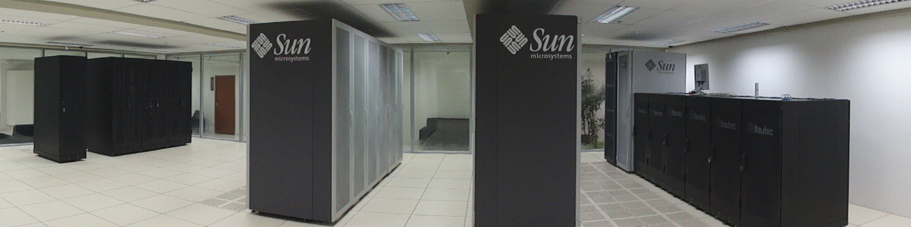

<script id="home" type="text/html">
<div id="myCarousel" class="carousel">
    <ol class="carousel-indicators">
        <li data-target="#myCarousel" data-slide-to="0" class="active"></li>
        <li data-target="#myCarousel" data-slide-to="1"></li>
        <li data-target="#myCarousel" data-slide-to="2"></li>
    </ol>
    <div class="carousel-inner">
        <div class="item active">
            

            <div class="carousel-caption">
                <h1 class="inverse"><strong>203</strong> usuários, <strong>42</strong> projetos em <strong>9</strong> linhas de pesquisa.</h1>
                 <p class="lead">Conheça a relação dos projetos que utilizam o <strong>GridUNESP</strong>.</p>
            </div>
        </div>

        <div class="item">
            
            <div class="carousel-caption">
                <h1><strong>368</strong> hosts, <strong>2944</strong> cores and <strong>33 TeraFlops</strong></h1>
                 <p class="lead">utilize o poder computacional do <strong>GridUNESP</strong> para executar o seu experimento.</p>
            </div>

        </div>
        <div class="item">
            
        </div>
    </div>
    <a class="left carousel-control" href="#myCarousel" data-slide="prev">&lsaquo;</a>
    <a class="right carousel-control" href="#myCarousel" data-slide="next">&rsaquo;</a>
</div>


<section class="container stats">
               <h3>Our last stats</h3>
               <h4>* updates can be delayed by 30 minutes.</h4>
</section>

<div class="container">
        <div class="fbox center span3">
            <div class="fchart center" id="chart01"></div>
            <div class="ftext center">
                <div class="ftext-number">5252</div>
                <div class="ftext-title">running</div>
                <div class="ftext-title2">jobs</div>
                <p>this is the amount of jobs running <strong>just now</strong>
in our cluster. <a href="">Read more</a></p>
            </div>
        </div>

        <div class="fbox center span3">
            <div class="fchart center" id="chart05"></div>
            <div class="ftext center">
                <div class="ftext-number">4874</div>
                <div class="ftext-title">avg running</div>
                <div class="ftext-title2">time</div>
                <p>the average of running time of completed jobs in the
<strong>current mounth</strong> (in minutes). <a href="">Read more</a></p>
            </div>
        </div>

        <div class="fbox center span3">
            <div class="fchart center" id="chart02"></div>
            <div class="ftext center">
                <div class="ftext-number">152</div>
                <div class="ftext-title">processed</div>
                <div class="ftext-title2">hours</div>
                <p>in the <strong>current month</strong>, this the amount of
hours that our cluster processed. <a href="">Read more</a></p>
            </div>
        </div>

</div>

<div class="container">
        <div class="fbox center span3">

            <div class="ftext center tall">
                <div class="ftext-number" id="goo-stats-quality"></div>
                <div class="ftext-title">service</div>
                <div class="ftext-title2">quality</div>
                <p>Our quality of service in the <strong>current month</strong>. <a href="">Read more</a></p>
            </div>

            <div class="ftext center tall">
                <div class="ftext-number" id="goo-stats-jobs-queue"></div>
                <div class="ftext-title">jobs in</div>
                <div class="ftext-title2">queue</div>
                <p>this is the amount of jobs running <strong>just now</strong> in our cluster. <a href="">Read more</a></p>
            </div>
        </div>

        <div class="fbox center span6">
            <div class="fchart pie center" id="chart06"></div>
            <div class="ftext center">
                <p>Percentage of applications which were executed in our grid in
the <strong>current month</strong>.</p>
            </div>
        </div>


</div>

<!--
<div class="container">
<hr><h4>Jobs Comming From</h4>
        <div class="fbox center span11">
            <div class="fmap center" id="map"></div>
        </div>
</div>
-->

</div>

<script language="javascript">

var parseDate = d3.time.format("%Y-%m-%dT%H:%M:%S").parse;

/* Draw Jobs Stats */
$.get('/api/v1/stats/jobs/').done(function(data) {
    objects = data.objects;
    for (o in objects) {
        item = objects[o];
        item.date = parseDate(item.date);
    }
    draw_line(objects, "#chart01");
})

/* Draw Hours Stats */
$.get('/api/v1/stats/hours/').done(function(data) {
    objects = data.objects;
    for (o in objects) {
        item = objects[o];
        item.date = parseDate(item.date);
    }
    draw_line(objects, "#chart02");
})

/* Draw Avg Time Stats */
$.get('/api/v1/stats/avgtime/').done(function(data) {
    objects = data.objects;
    draw_bar(objects, "#chart05");
})

$.get('/api/v1/stats/apps/').done(function(data) {
    objects = data.objects;
    draw_pie(objects, "#chart06");
})


/* Get some metrics */
$.get('/api/v1/stats/quality/').done(function(data) {
    objects = data.objects;
    quality = objects[0].value;
    $('#goo-stats-quality').text(quality);
})
$.get('/api/v1/stats/queue/').done(function(data) {
    objects = data.objects;
    queue = objects[0].value;
    $('#goo-stats-jobs-queue').text(queue);
})

// draw_map("json/world.json", "#map");
</script>

</script>
